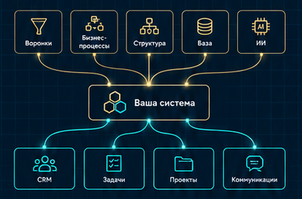
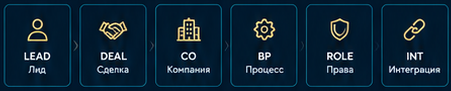
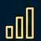
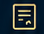
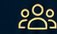
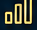
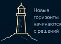

Собирать воронки без разработчика
Понимать логику и настраивать самостоятельно.

Авторский курс Тимофея Дронова
Курс не про кнопки — про то, как система устроена внутри.
Первый поток · 25 000 ₽
Система создаёт свободу. Большие цели ближе.
Мы даём знания, чтобы решения по CRM принимали вы, а не тот, кто вам её продал.

Слишком много возможностей, непонятно, с чего именно начать.
Вместо ясных ответов — сложные термины и непонятные схемы.
Даже небольшие изменения требуют больших бюджетов.
Команда не использует CRM и ведёт работу в сторонних сервисах.
Кажется, что ИИ решит всё, но результаты разочаровывают.
Понимать логику и настраивать самостоятельно.
Видеть, за что платите, и оценивать обоснованность.
Настраивать права и обеспечивать безопасность данных.

Оценивать затраты и эффект реалистично.
Понимать возможности и ограничения.
Проверять результаты и управлять подрядчиками.
1 месяц · 8 занятий · 8 практических заданий
Логика CRM изнутри
Реальные задачи
Связать всё в единую систему
Где заканчивается no-code
Защита данных и процессы
Возможности и ограничения
Проверка и контроль
Из любой точки мира
Реальные задачи

С обратной связью

Живое общение
Поддержка кураторов
10+ лет внедрения
Битрикс24
Я видел почти все ошибки внедрения — и хочу научить вас их не повторять.

Потребуется самостоятельная практикаКоличество мест ограничено
Курс даёт знания и навыки,
а не гарантии
финансового результата.
Можно начать без опыта. На курсе разберём логику CRM и перейдём к практическим задачам.
Собственникам бизнеса и сотрудникам, которые отвечают за внедрение и работу CRM.
Чтобы понимать предложения подрядчика, оценивать сметы и принимать результат работы.
Условия доступа к записям уточним при записи на поток.
Курс даёт знания и навыки. Финансовый результат зависит от вашей практики и бизнеса.
ИИ помогает решать задачи, но выбирать решения и проверять их результат должен человек.
